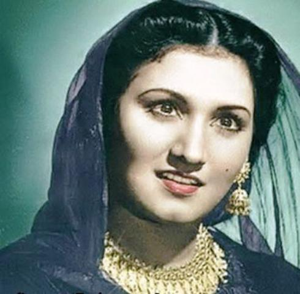

In the same year, she established the Master Deenanath Mangeshkar Hospital
in Pune, managed by the Lata Mangeshkar Medical Foundation
(founded by the Mangeshkar family in October 1989). In 2005,
she designed a jewellery collection called Swaranjali, which was crafted by
Adora, an Indian diamond export company.
In 2014, she recorded a Bengali album, Shurodhwani, including poetry by Salil Chowdhury, also
composed by Pai. On 30 March 2019, Mangeshkar released the song "Saugandh Mujhe Is Mitti Ki",
composed by Mayuresh Pai, as a tribute to the Indian army and nation.